0x00 前言
书接上文，在《从零开始搭建 AI 环境》中，我们介绍了大模型网关 new-api：
另一个容易被忽略的大模型入口，是 GitHub Copilot。它每月都会给订阅用户或开源贡献者提供一定额度，可以使用 Claude、GPT、Gemini 等大模型。
问题在于，GitHub Copilot 默认只能通过微软生态里的 IDE 或插件使用，例如 VSCode、Visual Studio 等，不能像普通 API 一样直接配置到 OpenCode。
那么，有没有办法让 OpenCode 也能使用 GitHub Copilot 里的模型额度？
0x10 网关代理
其实 GitHub Copilot 之所以不能被 OpenCode 等 Agent 直接调用，本质原因是它没有对外暴露常见的大模型兼容接口：
| 接口格式 | API 端点 |
|---|---|
| OpenAI Compatible | /chat/completions |
| OpenAI Responses | /responses |
| Anthropic | /messages |
因此解法也很简单：协议转换。
GitHub 上有一个开源网关代理 copilot-api，可以把 Copilot 转为 OpenAI/Anthropic 兼容接口。这样一来，它就可以作为 new-api 的一个上游渠道，间接接入 OpenCode：
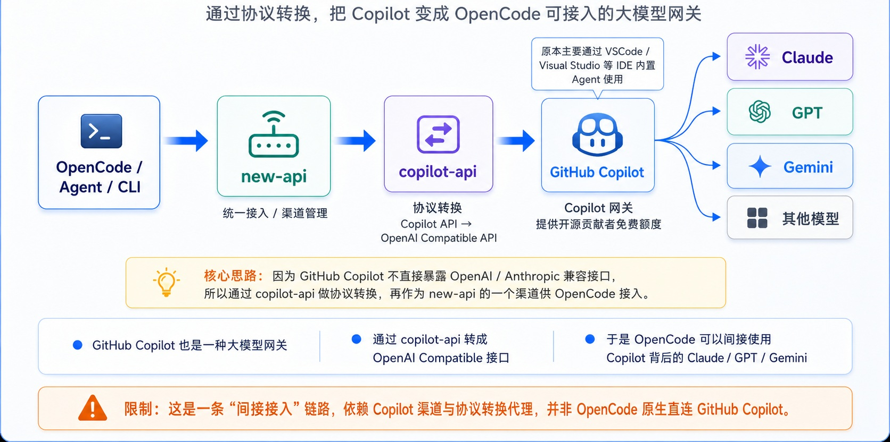
0x11 部署
在《从零开始搭建 AI 环境》中，我们使用 Docker 部署了 new-api。在它的 docker-compose.yml 中，可以看到容器网络配置如下：
networks:
new-api-network:
driver: bridge为了把 copilot-api 配置成 new-api 的渠道，也建议把 copilot-api 放到 Docker 中运行，并且让它和 new-api 处于同一个容器网络。这样 new-api 才能直接访问 copilot-api 提供的代理服务。
本文让 AI 修改了 copilot-api 的启动方式，补充了一个 docker-compose.yml：
services:
copilot-api:
build:
context: .
container_name: copilot-api
ports:
- "4141:4141"
volumes:
- ./copilot-data:/root/.local/share/copilot-api
networks:
- new-api-network
restart: unless-stopped
networks:
new-api-network:
external: true
name: new-api_new-api-network这份配置重点看 4 个地方：
- 服务名：
copilot-api - 暴露端口：
4141 - 容器网络：与 new-api 共用
new-api-network - 存储卷：挂载到
./copilot-data，用于保存 GitHub 认证 Token
这份配置定义了 copilot-api 在容器里暴露的服务地址就是 http://copilot-api:4141 。
因为部署 new-api 时已经配置了 Docker Desktop 的出口代理，这里就不重复赘述了，代理是必须的，否则无法连接到 Github ：
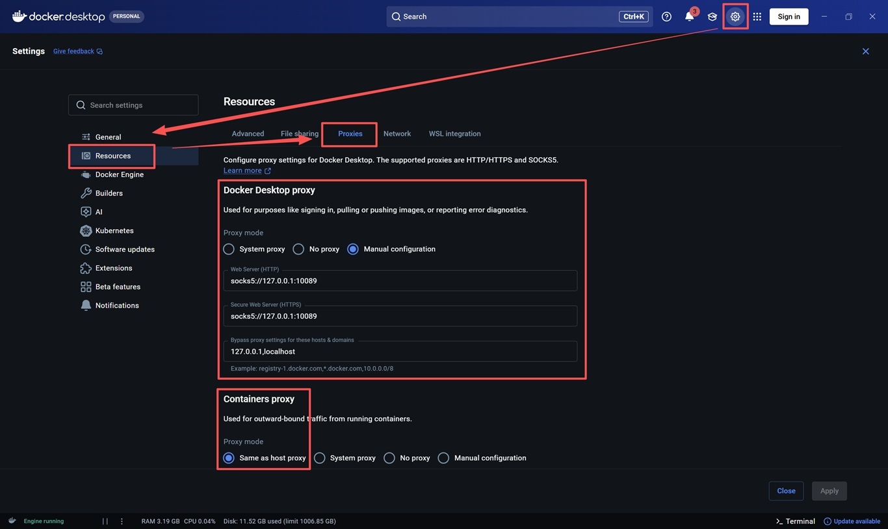
0x12 认证
此时执行 docker-compose up 命令即可启动 copilot-api。
首次启动时，终端会打印类似下面的设备认证提示：
Please enter the code "3543-168F" in https://github.com/login/device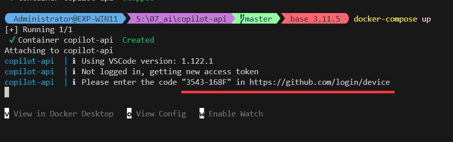
访问 https://github.com/login/device，选择要授权的 GitHub 账号（该账号需要提前开通 GitHub Copilot）：
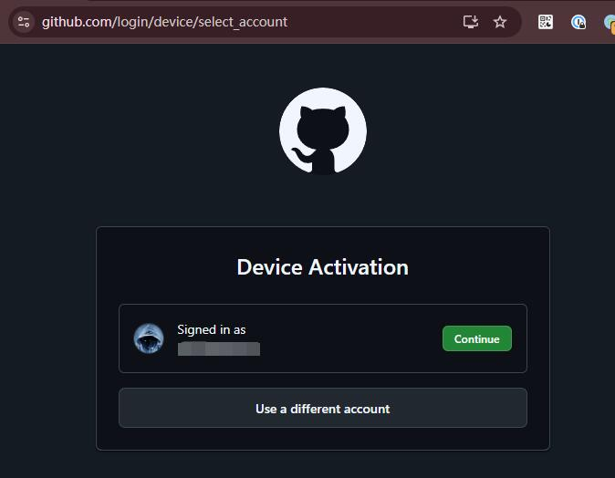
输入终端打印的认证码，例如 3543-168F：
最后点击 Authorize 完成授权：
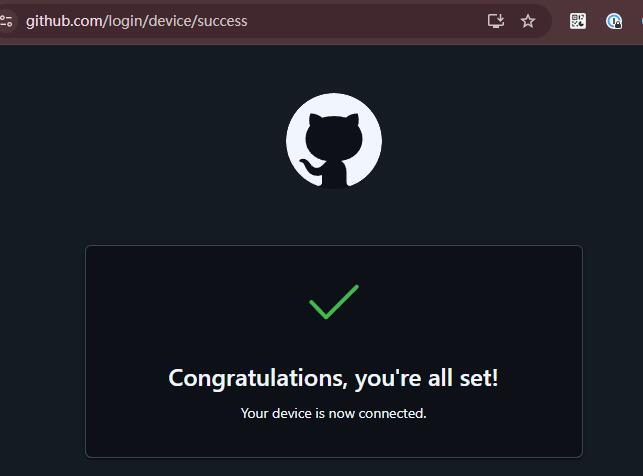
授权成功后，认证 Token 会自动保存到 copilot-data/github_token。
回到终端，可以看到当前 Copilot 支持的模型列表 （实际上并非全都可用的）：
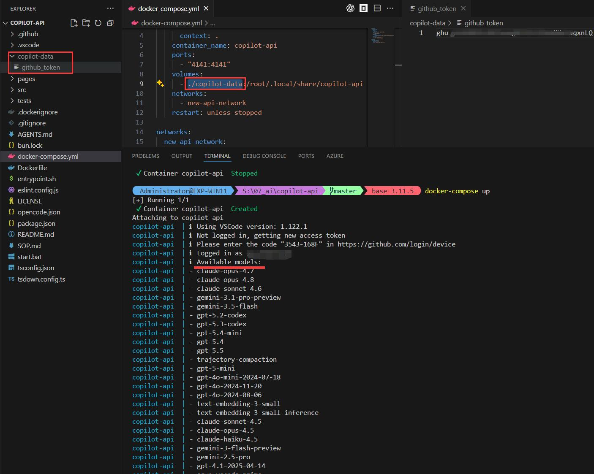
到这里，copilot-api 已经成功对接到你的 GitHub Copilot 了。
0x13 获得可用模型
既然 copilot-api 返回的模型列表并非全都可用，那要怎么得到真正可用的模型列表呢？
其实很简单，在 VSCode 登录 Github 账号（左下角），然后点击顶部的 Copilot 入口就会打开 Copilot 侧栏，从右下方的模型选单就能看到当前 Github 账号能使用的模型列表：
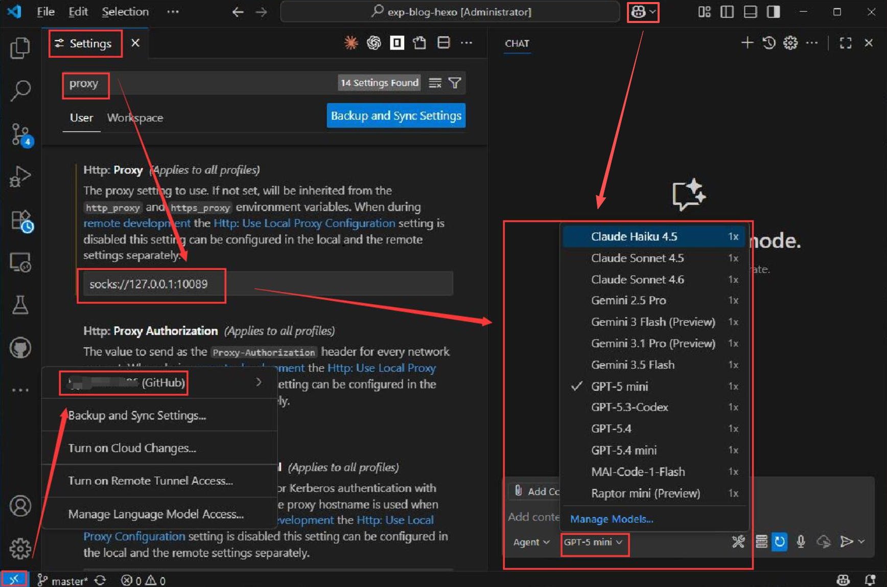
由于 Anthropic 对国内 IP 有访问限制，VSCode 需要设置代理才能看到 Copilot 境外模型，代理配置入口在 File
->Preferences->Settings->检索Proxy
如图所示，VSCode 显示当前可用的模型有：
- claude-haiku-4.5
- claude-sonnet-4.5
- claude-sonnet-4.6
- gemini-2.5-pro
- gemini-3-flash-preview
- gemini-3.1-pro-preview
- gpt-5-mini
- gpt-4o
- gpt-4.1
上述模型是我实测可用的，由于 Copilot 本身错误设置了模型参数，社区提交了 issue 尚未解决，这里就不理会了：
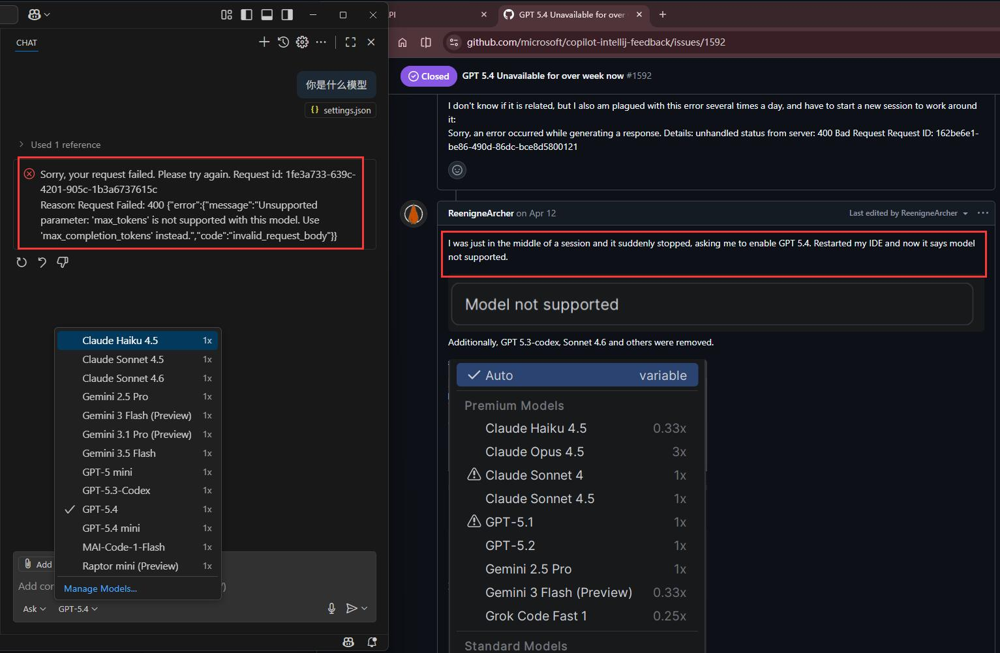
0x20 对接 new-api
参考《从零开始搭建 AI 环境》中的 new-api 配置方式，先在「模型管理」和「价格设置」里添加同名模型：
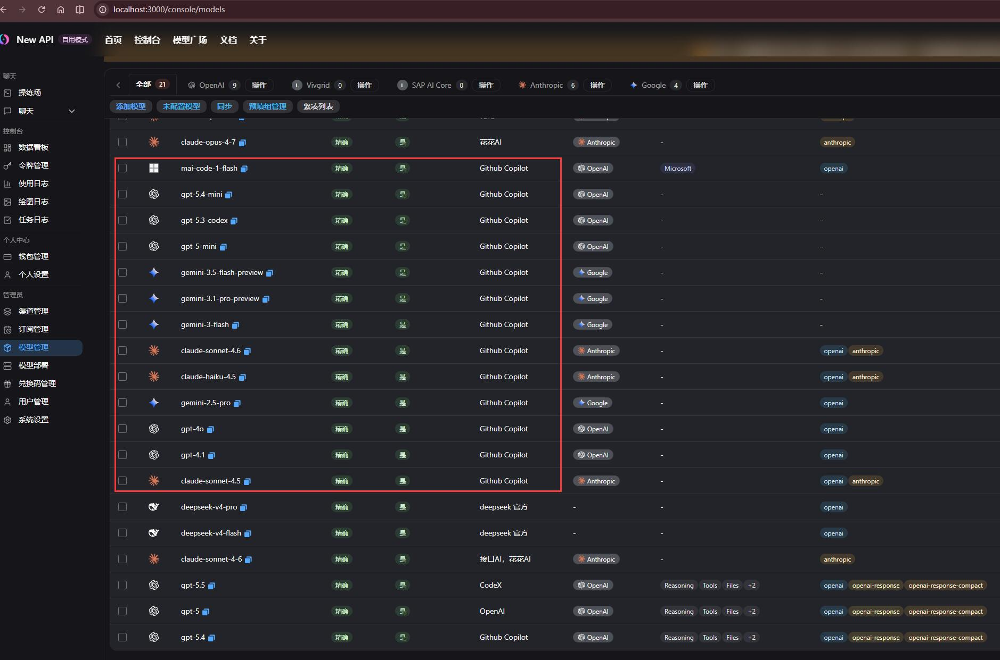
随后在「渠道管理」中新建两个自定义渠道：
| 渠道参数 | OpenAI 渠道 | Anthropic 渠道 | 备注 |
|---|---|---|---|
| 类型 | OpenAI |
Anthropic Claude |
copilot-api 支持两种协议 |
| 名称 | Copilot-OpenAI |
Copilot-Anthropic |
自己能理解的任意名称即可 |
| 密钥 | dummy |
dummy |
不需要，填任意非空值均可 |
| API地址 | http://copilot-api:4141 |
http://copilot-api:4141 |
copilot-api 在容器里暴露的服务地址 |
| 模型 | gemini-2.5-pro, gemini-3-flash-preview, gemini-3.1-pro-preview, gpt-5-mini, gpt-4o, gpt-4.1 |
claude-haiku-4.5, claude-sonnet-4.5, claude-sonnet-4.6 |
Claude 模型会检测是不是从 Claude Agent 发出的请求，因此渠道最好分开配置，以便对请求做一些特异化处理 |
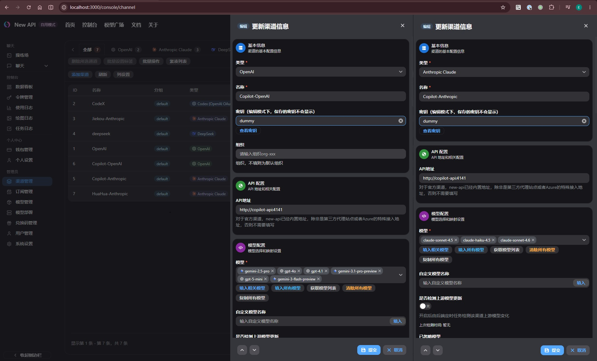
测试一下，能连通就说明渠道已经打通：
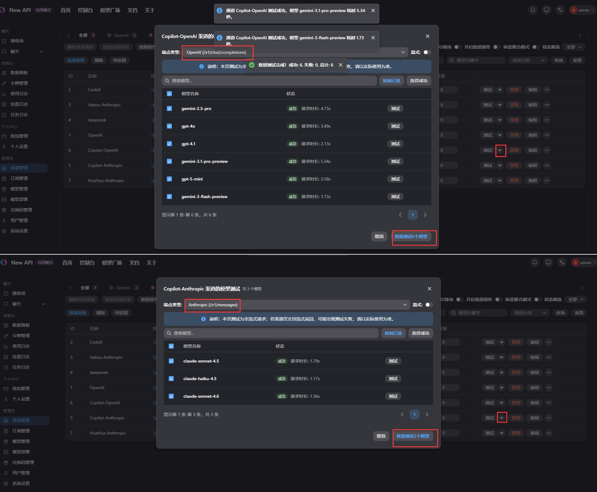
0x30 对接 OpenCode
最后通过 cc-switch 把 copilot 渠道的新模型配置到 OpenCode 即可。
注意：Claude 模型的接口协议选择
Anthropic，其他模型选择OpenAI Compatible。
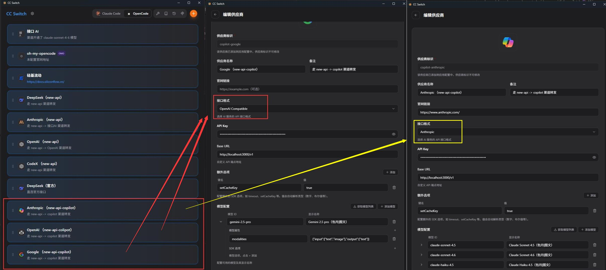
保存配置后，重启 OpenCode 即可生效：
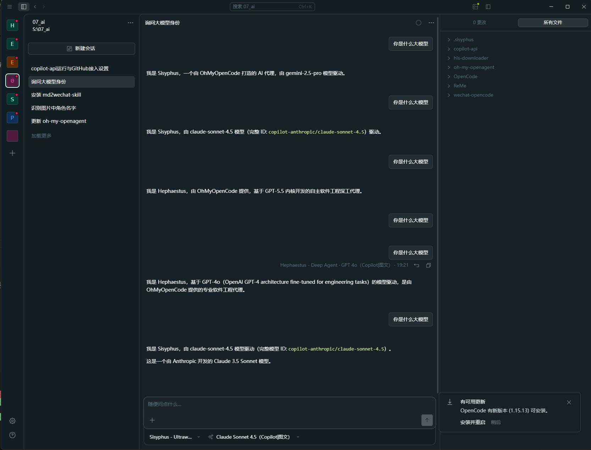
0x40 查看用量
GitHub Copilot 的模型额度不是无限的，需要定期关注用量。
可以通过 GitHub Copilot 面板查看：
https://github.com/settings/copilot/features
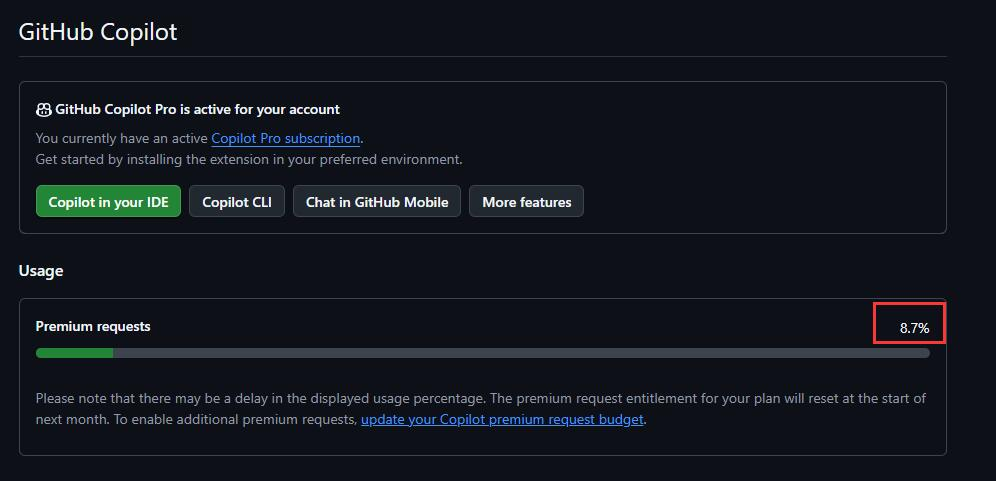
另外，也可以访问 copilot-api 提供的用量查询页面：
https://visuals-ai.github.io/copilot-api/?endpoint=http://localhost:4141/usage
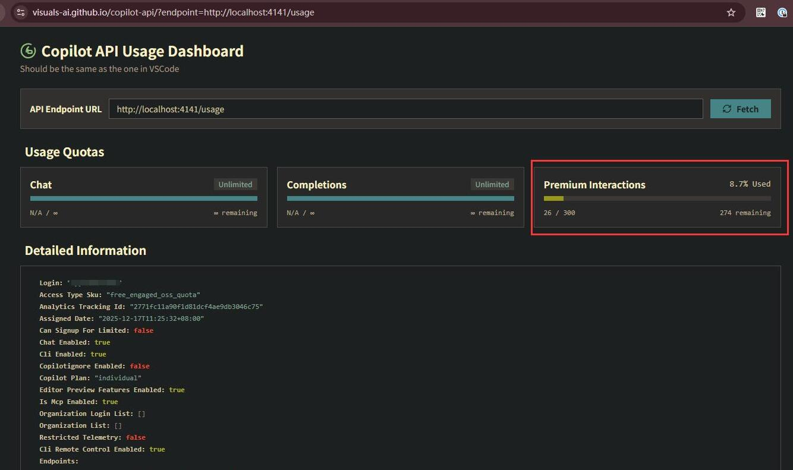
0xF0 后记
Github 有另一个使用 Go 语言、仿照 copilot-api 重写的代理 copilot2api-go，它也可以用本文同样的方式部署和配置。
两款代理功能区别不大，后者因为支持 Github 的账号池，会更倾向团队或企业使用：
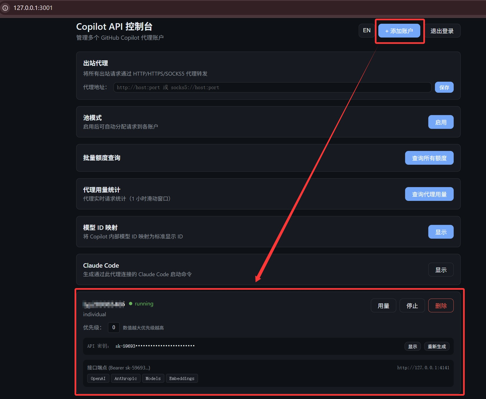